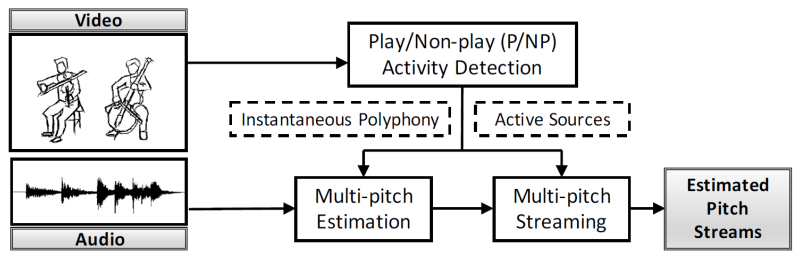
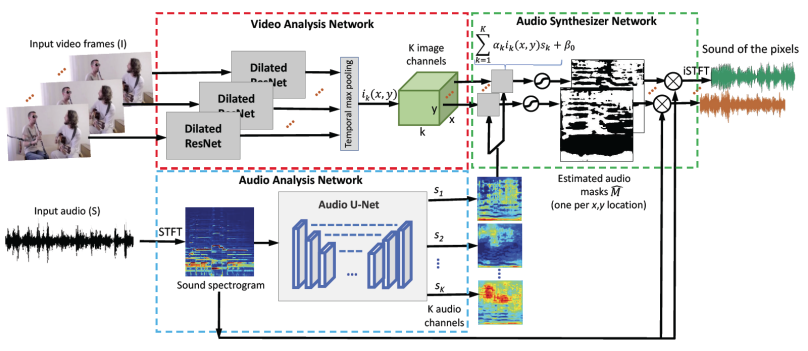
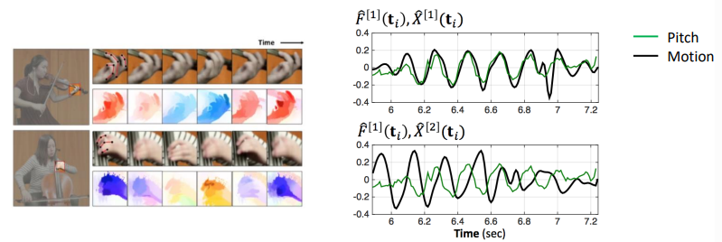
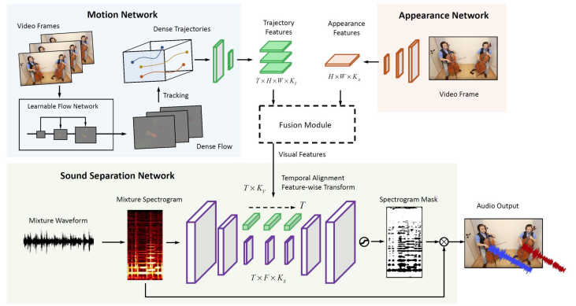
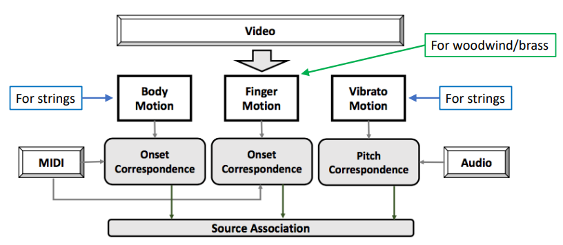
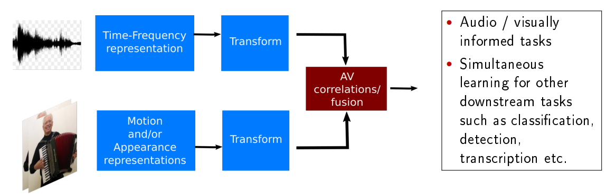
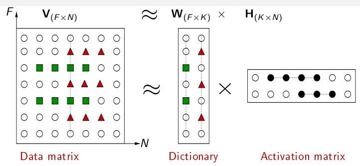
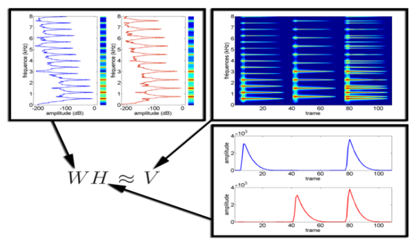
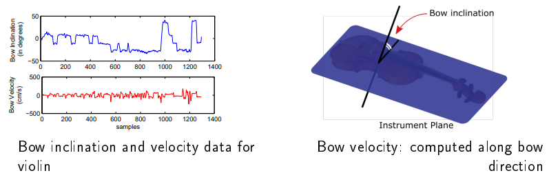
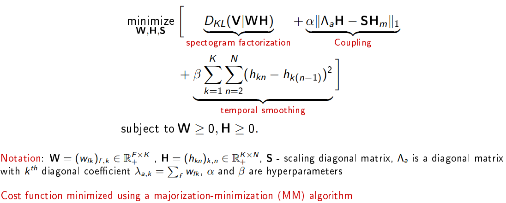

Notes for tutorial “Audiovisual Music Performance Analysis” at ISMIR 2019
Audiovisual Music Performance Analysis
可以将这一类研究问题总结成研究听觉-视觉对应性的问题，大致分为下面三类：
- 静态的：图像和音频的对应性，比如长笛演奏者的姿势与演奏/非演奏活动状态的识别，键盘上手指的动作和记谱的相互转换
- 动态的，并且跟乐器种类相关的：动作和音频的起伏之间的对应性，比如吉他手的弹奏动作与节奏模式的相互转换，小提琴手揉弦和颤音的相互转换
- 动态的，广泛的：视觉/听觉的联动，学习audiovisual的嵌入表示
静态的audiovisual correspondence
Play/Nonplay 活动检测
对 Play/Nonplay 活动进行检测，有助于提高多音高分析和记谱。

使用层次聚类：
a. 对音乐演奏者按照演奏乐器的类型进行聚类
b. 对 Play/Nonplay 活动进行聚类- Audiovisual 音乐分离

动态的audiovisual correspondence
Vibrato Analysis （弦乐）
将左手的rolling motion和音高浮动关联起来。用OpenPose跟踪手的动作，用光流估计（optical flow estimation）更精准地提取动作，用score-informed pitch estimation进行音高估计。

动作数据和频谱的协同作用
- motion’s sound

Audiovisual Source Association
将video, audio, score进行匹配。
- 身体动作和音符起始位置的相互转换（弦乐）：用OpenPose提取身体关节，用PCA检测主要动作，从主要动作中得到音符起始位置的概率曲线。
- 手指动作和音符起始位置的相互转换（风笛/管乐）：用OpenPose跟踪手的位置，用光流估计提取motion。
用带adaptive weights的线性变换将以上方法组合起来：

分析任务分类
- 识别与检测
- 关联与分离
- 演奏者活动分析
- 记谱
通用的framework：

如何建模多模态之间的依赖关系？将子空间联合起来进行学习。$T_i^*,T_a^*=\arg\max\limits_{T_i,T_a} S(T_i(I)T_a(A))$，其中$S$可以是correlation, covariance, mutual information，$T_i, T_a$可以用深度结构建模。
Co-factorization
用矩阵分解来解释数据：$V_{(F\times N)} \approx W_{(F\times K)} \times H_{(K\times N)}$.

解释性更好的模型：非负矩阵分解（Nonnegative Matrix Factorisation, NMF）

将多模态的特征结合的方法：
- 连接feature矩阵：对不同模态使用同一个损失函数，并不总能达到最优
- hard co-factorisation：施加约束使得activations相同，但不能解释跨模态的局部差异，另外，在audio和visual上的temporal activations理论上相近，而不必完全相同
soft co-factorisation：$D_1,D_2$分别是两个模态的相似度度量，$P(H_1,H_2)$是惩罚项，用来耦合分解后的矩阵；用最大-最小算法按顺序更新$H_1,H_2,W_1,W_2,S$
- cost functions: Kullback-Liebler and Itakura-Saito
- penalties: $l_1$ and $l_2$-coupling
Motion Informed Audio Source Separation
动作捕捉：以小提琴为例，将琴身看作平面，在琴弓上放置传感器，获取倾斜度和速度数据。

模型：soft non-negative matrix co-factorisation的变体

数据集：Ensemble Expressive Performance dataset (Marchini et al., 2014) 贝多芬的协奏曲弦乐演奏的多模态数据集
在视频中，source separation面临的困难是，动作的表示不那么直接。
- 一种解决方法是在每个演奏者的bounding box中提取motion clusters，用平均速度来表示。
- 另一种方法是联合分解音频频谱，用audio activations对cluster velocities做回归。
- 但这两种方法都很难解决两个小提琴的case。
基于audiovisual内容的分类和检索
motivation - 视觉传达了音乐风格信息
现有工作
- 基于专辑封面和宣传图片，进行风格标注和艺术家相似性计算
- 颜色，材质
- 距离计算，最近邻标签向量平均化
- 基于音乐视频的风格分类
- 音频特征：psychoacoustic music descriptors, MFCCs
- 视觉特征：颜色统计值，情绪值，颜色丰富程度，Wang emotional factors，Itten’s contrast，颜色名，亮度变化模式
- 分类器：SVM, KNN, random forest, naive Bayes
- 基于音频，专辑封面和文本的风格分类
- 对音频、视觉和文本表示使用深度神经网络进行学习、融合以及多标签分类